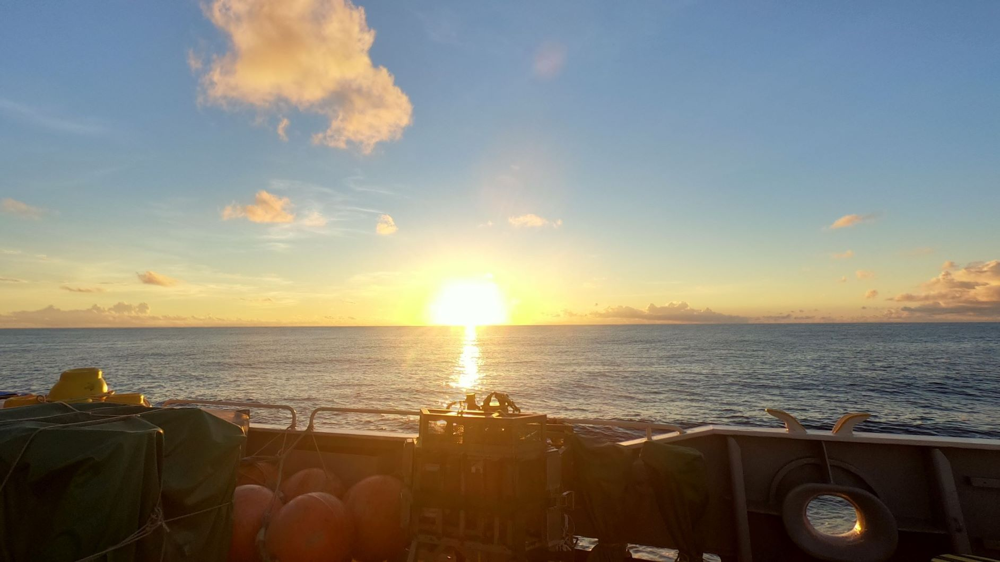
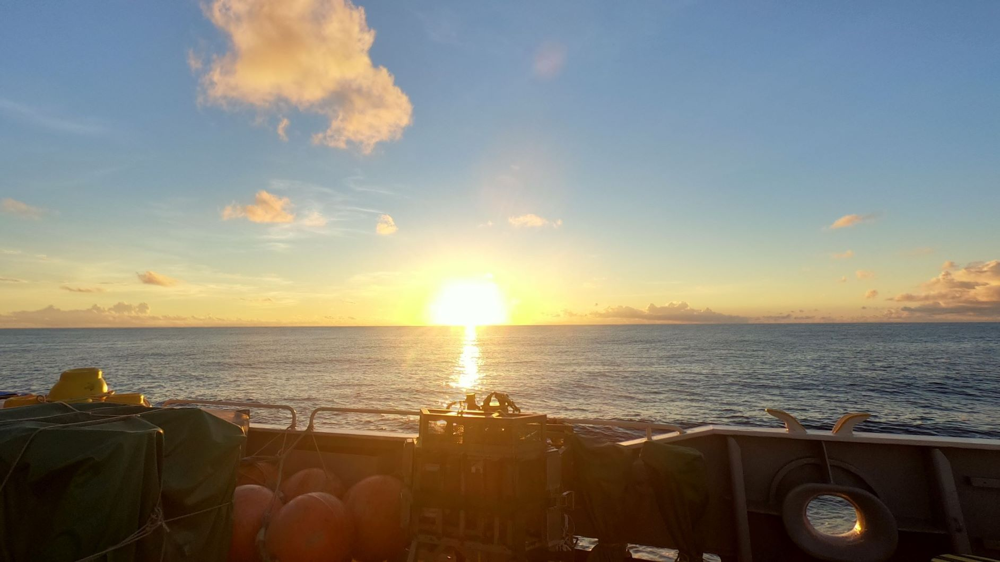

Home
私は、2018年の学術調査船「白鳳丸」によるインド洋航海(KH18-leg2)に参加しました。
この度は、海洋調査の魅力を世の中にお伝えしたいと思い、このサイトを作成しました。
ご覧になった後に「海を調べるって楽しそう」と思って頂ければ幸いです。
また、これからこの分野に飛び込む学生さん達の参考になればと思っています。

私は、2018年の学術調査船「白鳳丸」によるインド洋航海(KH18-leg2)に参加しました。
この度は、海洋調査の魅力を世の中にお伝えしたいと思い、このサイトを作成しました。
ご覧になった後に「海を調べるって楽しそう」と思って頂ければ幸いです。
また、これからこの分野に飛び込む学生さん達の参考になればと思っています。